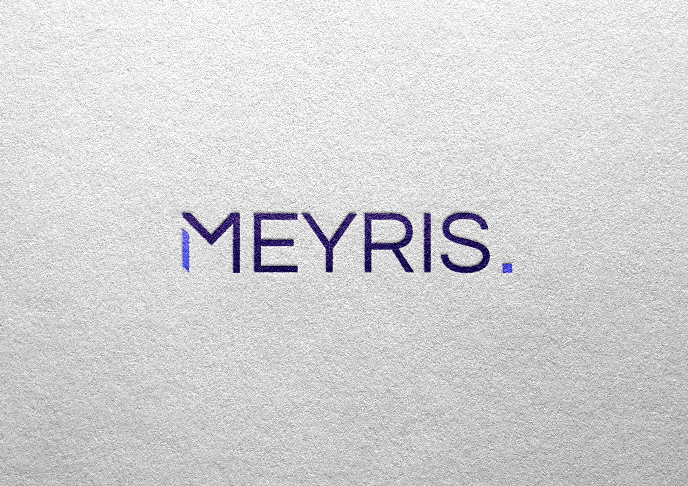

Meyris
MEYRIS est une entreprise qui aide les professionnels à installer, gérer et protéger leurs systèmes informatiques.
Pour le lancement de leur entreprise,
j'ai eu le plaisir de concevoir leur logo et de poser les bases de leur identité visuelle (couleurs et typographies).

Le logo de MEYRIS repose sur une base typographique forte utilisant la Questrial de Google Fonts.
Cette police sans-serif se distingue par ses formes géométriques épurées et ses courbes très rondes,
ce qui lui confère une lisibilité et une modernité naturelles.
Pour affirmer l'identité technologique de la marque,
j’ai découpé le "M" de manière dynamique avec des angles triangulaires.
Ce côté futuriste est renforcé par le point final du logo,
volontairement transformé en carré pour représenter un pixel.
L'ensemble installe une image hautement professionnelle,
solidifiée par une palette de bleus qui inspire confiance et rigueur.


Cette charte graphique a été volontairement pensée pour être concise et épurée.
Le client souhaitait éviter des règles trop contraignantes afin de conserver un maximum de liberté
et de flexibilité pour la conception et l'évolution future de son site internet.
Au final, ce document s’apparente davantage à un recueil du design de l’entreprise qu’à une charte rigide.
Plutôt que de fixer des contraintes strictes, il pose les fondations graphiques de Meyris et sert de fil
conducteur visuel pour inspirer les futures créations en toute liberté.